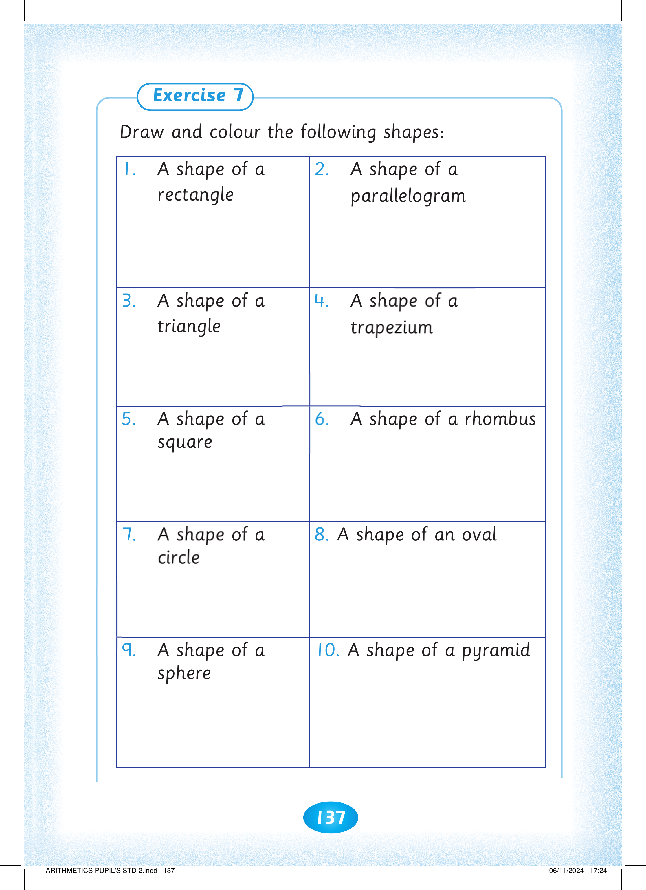
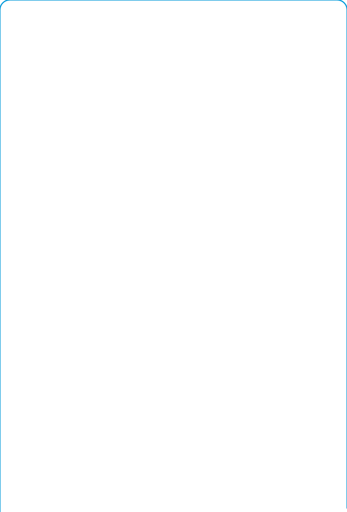

137



Exercise 7. Draw and colour the following shapes. 1. A shape of a rectangle. 2. A shape of a parallelogram. 3. A shape of a triangle. 4. A shape of a trapezium. 5. A shape of a square. 6. A shape of a rhombus. 7. A shape of a circle. 8. A shape of an oval.

Draw and colour the following shapes:
1. A shape of a rectangle
2. A shape of a parallelogram
3. A shape of a triangle
4. A shape of a trapezium
5. A shape of a square
6. A shape of a rhombus
7. A shape of a circle
8. A shape of an oval
9. A shape of a sphere. 10. A shape of a pyramid.
10. A shape of a pyramid


ARITHMETICS PUPIL'S STD 2.indd 137
06/11/2024 17:24